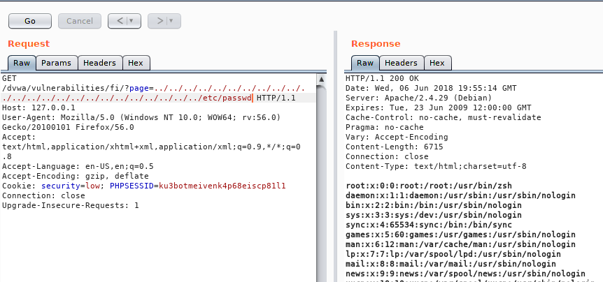

Сайты состоят из кода, а код это текст, когда текста много, то его приходится делить на файлы. File Inclusion (подключение файлов) - это способ включения кода одного файла в текущий, при котором код в подключаемом файле выполняется.
File Inclusion делятся на два типа: Local и Remote. LFI будет работать там где php код принимает имя файла в параметрах и инклудит его. Опять же плохая фильтрация. Это дает нам возможность выходить из директории и подключать любые файлы находящиеся на веб сервере. RFI будет работать там, где в php.ini включены опции allow_url_fopen и allow_url_include, первая позволяет работать со ссылками как с файлами, вторая инклудить ссылки как файлы. Начнем с LFI.
Открывай раздел File Inclusion. У нас тут такой url
http://127.0.0.1/dvwa/vulnerabilities/fi/?page=include.php
т.е. include.php это 100% какой то файл на сервере. Хорошо, первое что тут можно сделать это попытаться подставить ./ или ../ перед именем файла. В первом случае никаких изменений, что уже хорошо, во втором ничего не вывел, потому что мы вышли из директории где этот файл лежал. Теперь ты понимаешь почему я так много уделил времени изучению линукса? Отлично, тогда шлем такой запрос

Вот так все просто. Мы получили содержимое файла /etc/passwd.
{kind=link}
Чтобы не париться с вставлением ../ и не думать о их кол-ве можно воспользоваться.. Чем? Правильно, интрудером. Отправляй запрос в интрудер, помечай параметр page, тип атаки снайпер. В параметрах пэйлоада в выпадающем списке находишь "Fuzzing - Path travesal". Теперь обрати внимание на пути, в конце есть {FILE} - это типо маски, тебе нужно сделать замену этой маски на что то свое. Ниже есть раздел "Payload Processing" жми Add, появится окно надстройки и в выпадающем списке выбирай "Math/replace". Теперь в первое поле пишешь регулярку что менять, а ниже на что менять. В твоем случае ты меняешь "\{FILE\}" на "etc/passwd". Помнишь же что спец символы в регулярном выражении нужно экранировать обратным слешем иначе он будет управляющей конструкцие для регулярного выражения. Все "OK" и "Start attack". Так ты быстро найдешь как высоко тебе нужно подниматься по дереву каталогов.
Склеивание указанного в параметре имени файла с расширением
Дальше несколько приемов обхода фильтраций. Например, ты видишь в урле просто имя файла, значит оно склеивается на сервере с расширением, чтобы отбросить это расширение нужно подставить в конец имени в запросе нулевой байт, к пример %00. Список нулевых байтов ты можешь найти все в тех же репозиториях для фаззинга.
Если не проканало, то можно попробовать вписывать ../ до тех пор пока длина пути не будет равна или больше 4096 - это максимальная длина пути для php (тут могу ошибаться). А пхп в свою очередь усекет все, что превышает длину при инклуде файла.
Хорошо, что такое LFI понятно, перейдем к RFI. С RFI все очень просто, достаточно в параметр подключающий файл указать урл.

Вот так все просто, указал урл на свой шелл и сразу через & добавил параметр x который должен принять мой шелл.
Пойдем дальше и сменим сложность на medium. Для LFI сразу сразу видно в сорце замену "../" и замену "http(s)://". Ну первая фильтрация обходится если указать "....//", фаззинг списки с таким приемом и подобными ты найдешь в репоиториях опять же. А вот интереснее стал случай с RFI. Получается что в данный момент не получится указать урл вовсе. В такой ситуации выручит wrapper. Напрмер в данном случа и LFI заработает если мы сделаем такой запрос.
{kind=link}
И мы получим запрошенный файл в кодировке base64. Вкладка декодер нужна именно для таких случаев :-) Также возможно попробовать любой враппер
php://input
{kind=link}
expect - правда по умолчанию эта фича не работает.
GET /dvwa/vulnerabilities/fi/?page=expect://id HTTP/1.1
Host: 127.0.0.1
User-Agent: Mozilla/5.0 (Windows NT 10.0; WOW64; rv:56.0) Gecko/20100101 Firefox/56.0
Accept: text/html,application/xhtml+xml,application/xml;q=0.9,*/*;q=0.8
Accept-Language: en-US,en;q=0.5
Accept-Encoding: gzip, deflate
Cookie: security=medium; PHPSESSID=ku3botmeivenk4p68eiscp81l1
Connection: close
Upgrade-Insecure-Requests: 1
Content-Length: 0
php://filter без кодирования в base64
GET /dvwa/vulnerabilities/fi/?page=php://filter/resource=/etc/passwd HTTP/1.1
Host: 127.0.0.1
User-Agent: Mozilla/5.0 (Windows NT 10.0; WOW64; rv:56.0) Gecko/20100101 Firefox/56.0
Accept: text/html,application/xhtml+xml,application/xml;q=0.9,*/*;q=0.8
Accept-Language: en-US,en;q=0.5
Accept-Encoding: gzip, deflate
Cookie: security=medium; PHPSESSID=ku3botmeivenk4p68eiscp81l1
Connection: close
Upgrade-Insecure-Requests: 1
Content-Length: 0
Если на сайте есть форма загрузки файлов, то можно попытаться упаковать shell в zip и распаковать враппером. В данном примере подразумевается, что при распаковке пхп добавит расширение .php, если этого не произойдет, то ты знаешь что делать :-)
php?page=zip://path/to/file.zip%23shell
Для чего все это нужно. Если у нас есть возможность инклудить файлы, то мы можем прогрузить шелл. Например если у нас есть доступ к чтению файлов, и только, то нужно искать файлы логов. Варианты тут такие:
- /var/log/apache2/access.log - Ищем логи веб сервера, если они есть, то пишем в юзер агент однострочный php шелл и отправляем запрос на чтение этого файла и сразу подставляем праметр для шелла. Особенность инклуда в том, что ему не важно имеет ли файл нужное расширение.
- /proc/self/environ - если мы можем читать этот файл, то поступаем также как выше.
- /tmp/sess_ID или /var/lib/php/sess_ID - иногда сайт пишет в файл сессии пользователя юзер агент. ID - значение параметра PHPSESSID в куках.
- Загрузить любой файл, лиж бы в нем был пхп код, например добавить пхп код в exif в JPEG и прочитать его через LFI.
- /var/log/auth.log - самый извратный способ. Если есть доступ к этому логу то логинимся по ссш на сервер, а в качестве имени пользователя указываем, угадай что?, однострочный шелл.
- Если ничего не вышло пробуем врапперы.
Чтобы добавить пхп шелл в изображение в раздел EXIF, нужно в любом графическом редакторе изменить свойства изображения. Например можно вписать шелл в поле "Камера". И я надеюсь ты уже понял как обойти фильтрацию в Higth.